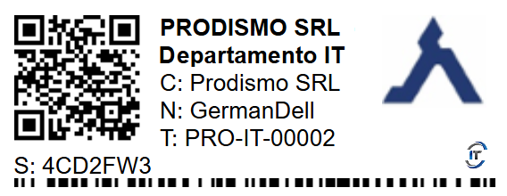
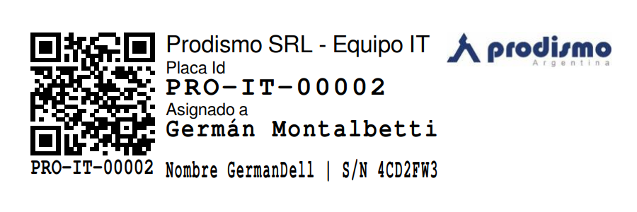

Procedimiento de Identificación y Registro de Activos de Información
1 OBJETIVO
Garantizar el inventario completo y actualizado de los activos críticos de información y soporte y sus responsables, alineado con los sistemas de la organización (ej. Activos de Información: SIP, SIP4.0, CATIA, NX, AutoForm, E-plan, MS Teams, MS Office. Ej. Activos de Soporte: Servidores, laptops, pcs de escritorio), en cumplimiento de los requisitos de seguridad de ISO/IEC 27001:2022, TISAX y de clientes automotrices.
2 IDENTIFICACIÓN DE ACTIVOS DE INFORMACIÓN
Definición:
- Activos primarios: Datos críticos para el negocio.
- Activos de soporte: Sistemas/recursos que los procesan.
Ejemplos para IT:
| Tipo de Activo | Ejemplos en Prodismo SRL | Confidencialidad |
|---|---|---|
| Datos de clientes | Base de datos en SIP (ERP). | Alto |
| Diseños 3D | Archivos en CATIA/NX. | Crítico |
| Correos corporativos | Información en MS Office 365. | Medio |
| Documentos internos | Manuales en SharePoint/OneDrive. | Bajo |
3 REGISTRO EN INVENTARIO DE ACTIVOS
Plantilla de Inventario (Herramienta de GRC): Snipe-IT o Excel
| ID Activo | Nombre | Tipo | Ubicación | Responsable | Contacto | Clasif. |
|---|---|---|---|---|---|---|
| INF-001 | BD Clientes SIP | Datos | Servidor SQL | Responsable de Datos | administracion@prodismo.com | Alto |
| SOP-005 | Servidor Windows | Infraestructura | Data Center | Administrador IT | eferrari@prodismo.com | Crítico |
| INF-100 | Diseños CATIA - NX - Simulaciones | Archivos CAD | OneDrive / SharePoint | Responsable de Datos | naltamirano@prodimos.com | Crítico |
| INF-200 | Diseños CATIA - Simulaciones | Archivos CAD | OneDrive / SharePoint | Responsable de Datos | jsolimano@prodismo.com | Crítico |
| INF-300 | Diseños CATIA | Archivos CAD-CAM | OneDrive / SharePoint | Responsable de Datos | mfrattini@prodismo.com | Crítico |
Campos Obligatorios:
- ID único (ej.: INF-001 para información, SOP-005 para soporte).
- Clasificación: Usar etiquetas como Crítico/Alto/Medio/Bajo (basado en impacto).
4 ASIGNACIÓN DE RESPONSABLES
Criterios:
- Activos de información: Dueño del proceso (ej.: Responsable de Datos para CATIA).
- Activos de soporte: Dueño técnico (ej.: Administrador IT para Windows Server).
Ejemplo:
| Activo | Responsable Asignado | Rol | Tareas |
|---|---|---|---|
| SIP/SIP4.0 (ERP) | Estaban Manzzoni | Gerente Administración | Validar accesos, aprobar integraciones. |
| Anydesk | Germán Montalbetti | IT Manager | Revocar accesos no autorizados. |
| MS Teams | Emiliano Ferrari | Soporte IT | Gestionar permisos de usuarios. |
5 HERRAMIENTAS Y MÉTODOS
- Automatización: Usar herramientas para escanear redes y detectar activos.
- Verificación manual: Entrevistas con dueños de procesos (ej.: equipo de ingeniería para CATIA/NX).
Evidencias para TISAX AL3
- Inventario de activos con:
- Fecha de creación y última actualización.
- Firmas de responsables y dirección.
- Diagrama de flujo: Mostrar cómo los activos de soporte (ej.: Windows Server) procesan los primarios (ej.: BD SIP).
- Registros de revisión: Actas de reuniones donde se validó el inventario.
Ejemplo de Comunicado para Responsables
Asunto: 📋 Asignación como Responsable del Activo [ID Activo]
"Hola [Nombre],
Se te asigna como responsable del activo [Nombre del Activo] (ID: XXX). Tus tareas incluyen:
- Validar su clasificación (Confidencialidad/Integridad).
- Reportar incidentes a itprodismo@prodismo.com.
- Revisar accesos cada 6 meses.
Firma: [Dirección]
Fecha: [DD/MM/AAAA]".
Recomendaciones Clave:
- Actualización trimestral: Añadir nuevos sistemas (ej.: si migran CATIA a la nube).
- Integración con Sistema de Gestión de la Seguridad de la Información (SGSI): Vincular activos a controles (ej.: F132-IT-1 (CATIA) → Control F511-IT-2 (A.18.1.3 - Cifrado)).
Instructivo de uso de Snipe-IT
- Acceso: Ingresar a la plataforma Snipe-IT con las credenciales proporcionadas.
- Registro de activos:
- Hacer clic en "Assets/Activos" en el menú principal.
- Seleccionar "Create New/Crear Nuevo" para agregar un nuevo activo.
- Completar todos los campos obligatorios (ID, nombre, tipo, ubicación, responsable, clasificación).
- Asignación de responsables:
- En la pestaña "Users/Usuarios", buscar y seleccionar al responsable.
- Asignar el activo al usuario correspondiente.
- Actualizaciones: Revisar y actualizar trimestralmente la información de los activos.
- Reportes: Generar reportes mensuales de inventario desde la sección "Reports/Reportes".
Para soporte técnico de Snipe-IT, contactar al administrador del sistema.

Etiqueta de Identificación de Activo Estándar #1

Etiqueta de Identificación de Activo Estándar #2
6 REVISIONES DEL DOCUMENTO
| Rev. N° | Fecha | Descripción |
|---|---|---|
| 0 | 25/8/2025 | Primera Emisión del documento |
| 1 | 14/1/2026 | Revisión completa del documento |